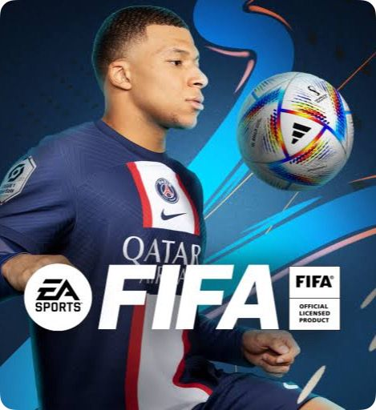
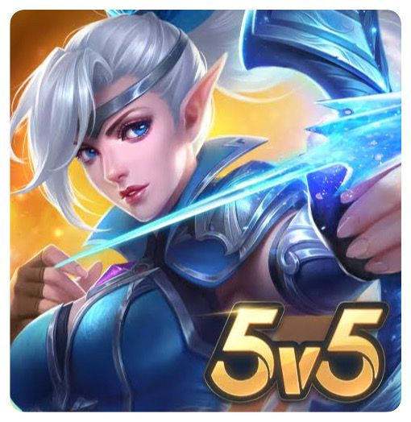
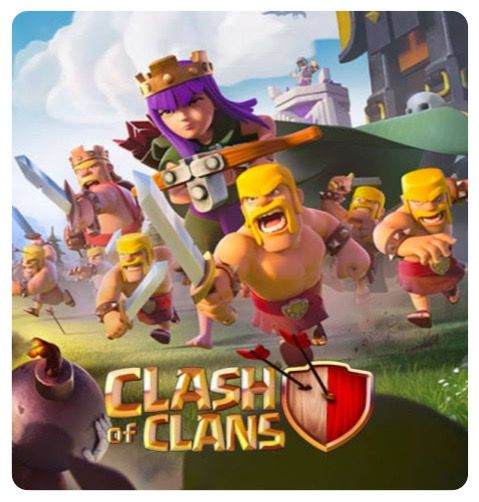

Halo! Saya adalah seorang mahasiswa yang bersemangat di bidang teknologi dan pemrograman. Saat ini, saya sedang mengejar gelar dalam Sistem Informasi di Universitas Hasanuddin. Selama perjalanan pendidikan saya, saya telah belajar berbagai bahasa pemrograman seperti Python, Java, dan JavaScript, serta mengembangkan pemahaman yang kuat dalam algoritma dan struktur data.
Fav Song
Fav Game
  Fav Person
YUK MABAR
Klik di sini untuk mengisi formulir